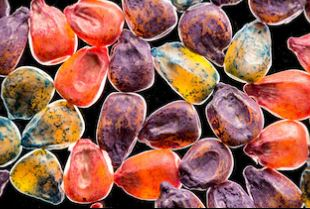
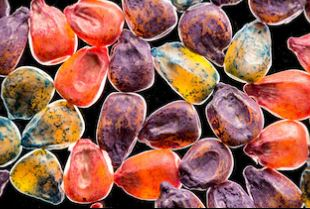

Traveler Magazine
내셔널지오그래픽 트래블러 포토 콘테스트에 참가한 수천 점에 이르는 놀라운 사진들을 검토한 끝에 , 심사위원들은 그중에서 가장 돋보인 작품인 를 대상작으로 선정했다. 도시, 자연, 사람 등 3개 분야에 걸쳐 놀라운 장면들을 포착해낸 사진을 뽑는 포토 콘테스트의 수상작을 소개한다.
Discover


더욱 감동적인 사진,
이야기 및 특별함을 즐겨보세요.
이야기 및 특별함을 즐겨보세요.

MAGAZINES
Discover
바이러스가 세상을 형성시킨 방법
COVID-19는 그들의 파괴력을 상기시켜주지만, 인간의 발전과 생존에 매우 중요하다.
화성에서의 삶
자비로운 채식주의자. 기후 난민. 과학적인 탐험이 발전함에 따라, 붉은 행성과 그 잠재적 거주자들에 대한 창의적인 해석도 가능해졌다.
왜 화성에 빠지는가?
그 먼지투성이의 붉은 행성은 수세기 동안 우리를 매료시켜 왔다. 우리가 더 많은 것을 알게 되더라도, 그것의 신비는 우리를 긴장하게 한다.
카슈미르 악몽
얼마나 모호한 지도들이 불우한 산과 빙하에 대한 유혈사태를 초래했는가
더 많은 소식을 받아보세요
당신의 메일로 네셔널 지오그래픽만의 특별한 메세지들을 배달해 드립니다!
구독하고 다양한 뉴스 받기 
